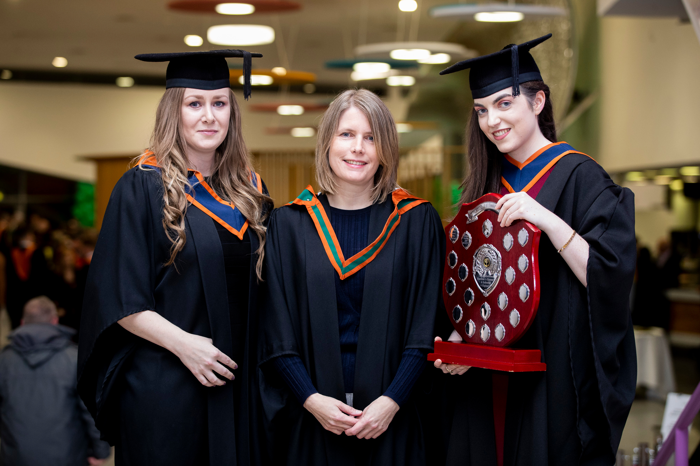

About

Mission, Vision & Values
The mission of the Institute is to continue to serve its students and the community by meeting the skills needs in the economy and increasing the level of participation in higher education and training, particularly in Dublin North-West and its environs.
The Institute will do this by achieving consistently high standards of relevance and quality in teaching, research, development and consultancy.
ITB will offer a welcoming and supportive environment to students from all educational and social backgrounds and to adults wishing to increase or update their level of technical skills.
The vision is that ITB will be part of the Technological University for Dublin and will be nationally recognised as a leader in providing high-quality higher education.